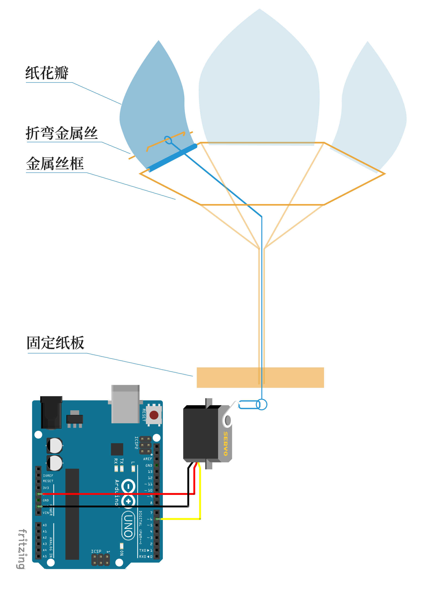

Part.2 Arduino系列

「课堂练习」流水灯
根据Bob教的案例，然后通过调整代码中各个小灯delay的时间，来实现个人专属的流水灯，Cool！
在Arduino中加入控制器
所需材料：
# slider控制小灯亮度
在课堂上学会了流水灯以后，觉得灯只能 on/off 会比较无趣，于是去了解了一下有什么办法可以控制这些元件。 于是发现了processing可以与arduino配合，然后又发现了一个touchosc可以在移动端上实现对arduino的控制。 大体流程大概是touchosc通过processing给arduino传递数据，从而实现pad与arduino的联动，Amazing!
# rotary控制舵机旋转
既然灯的亮度都可以控制，那舵机应该也有办法。在youtube上搜索到了相关的案例，然后复现了出来。 舵机胡乱的sweep已经不能满足我们小组了，我们想要的是掌控力，Power!
# 简易测谎仪
在仅有的元器件中，想做点入门比较容易的小demo，于是找到了这个可以利用皮电反应来进行交互的装置设计。
Galvanic Skin Response (GSR，皮电反应)：当我们的心理变化或外来刺激时，汗腺活动和交感神经会发生剧烈变化，进而引起人体皮肤电阻的变化，而这些微弱的变化是可以通过测量手掌或指尖得到的。
「项目」弗拉沃
综合课上学到知识，进行了一次实战演练，做了一个完整的项目；
所需材料
清单：
原理
# 连线图/结构图
# arduino代码
#includeServo servo1; int i = 0; void setup() { servo1.attach(6); } void loop() { for (i = -40; i < 140; i++) { servo1.write(i); delay(10); } for (i = 140; i > -40; i--) { servo1.write(i); delay(10); } }
# 机械设计
在课堂上学会了舵机的使用后，结合我们的概念（遇到光照就会开花）进行设计动力传导。舵机的上下转动，带动铁丝上下运动，随即控制花瓣开合。
# 花絮
请观看我们制作过程中的一些花絮。
# 后期设想
将IPAD控制舵机与实体小花弗拉沃结合，实现IPAD控制小花的开合。